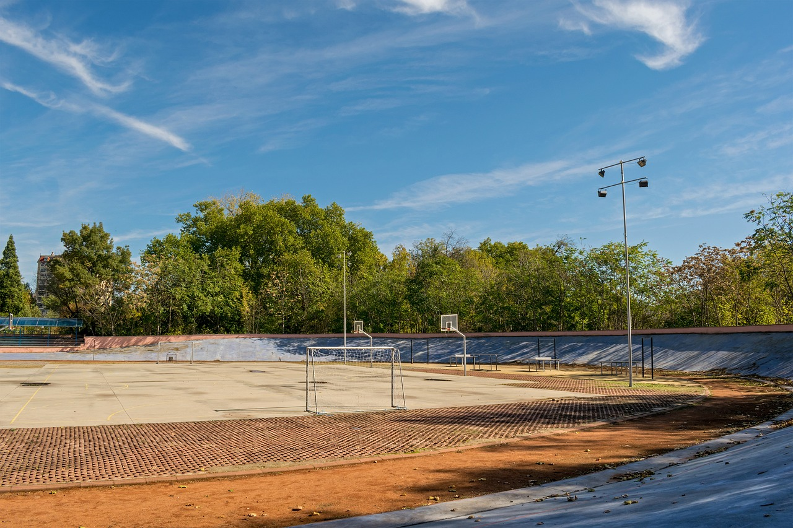

- 우리집강아지는
- 복슬강아지
- 학교갔다 돌아오면 멍 멍 멍
- 재잘재잘
- 반갑다고
- 멍 멍 멍
집가고싶다
홍익대학교

아무것도 하기 싫어
네모난 침대에서 일어나 눈을 떠보면
네모난 창문으로 보이는 똑같은 풍경
네모난 문을 열고 네모난 테이블에 앉아
네모난 조간신문 본뒤
네모난 책가방에 네모난 책들을 넣고
네모난 버스를 타고 네모난 건물지나
네모난 학교에 들어서면 또 네모난 교실
네모난 칠판과 책상들
네모난 오디오 네모난 컴퓨터 TV
네모난달력에 그려진 똑같은 하루를
의식도 못한채로 그냥 숨만 쉬고 있는걸
주위를 둘러보면 모두 네모난 것들 뿐인데
우린 언제나 듣지 잘난 어른의 멋진 이말
'세상은 둥글게 살아야 해'
지구본을 보면 우리사는 지군 둥근데
부속품들은 왜다 온통 네모난건지 몰라
어쩌면 그건 네모의 꿈일지 몰라
네모난 아버지의 지갑엔 네모난 지폐
네모난 팜플렛에 그려진 네모난 학원
네모난 마루에 걸려 있는 네모난 액자와
네모난 명함의 이름들
네모난 SPEAKER 위에놓인 네모난 테잎
네모난 책장에 꽂혀있는 네모난 사전
네모난 서랍속에 쌓여있는 네모난 편지
이젠 네모같은 추억들
네모난 태극기 하늘높이 펄럭이고
네모난 잡지에 그려진 이달의 운수는
희망없는 나에게 그나마의 기쁨인가봐
주위를 둘러보면 모두 네모난 것들 뿐인데
우린 언제나 듣지 잘난 어른의 멋진 이말
'세상은 둥글게 살아야해'
지구본을 보면 우리사는 지군 둥근데
부속품들은 왜 다 온통 네모난 건지 몰라
어쩌면 그건 네모의 꿈일지 몰라